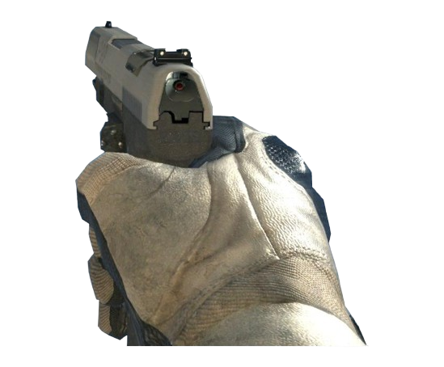

Seus sentidos estão aguçados sob a bruma.
Há séculos, o ancestral Ducado de Prata foi amaldiçoado por um pacto profano que cobriu suas terras com névoa eterna. Todo habitante que ousa caminhar sob a luz enigmática da lua é metamorfoseado em uma criatura bestial guiada pela sede de sangue.
Você é o último Caçador da Ordem da Prata. Armado com seu rifle duplo purificado de projéteis argênteos, seu dever solene é infiltrar-se no labirinto gótico, eliminar a matilha corrompida e exorcizar o espírito ancestral do Lobisomem Alfa que guarda a catedral profunda.
Besta tradicional que ronda as matas escuras. Apesar de ser a ameaça mais comum no labirinto, seu ataque em alcateia pode sobrecarregar qualquer caçador descuidado.
A névoa consumiu sua alma e as garras de prata dilaceraram seu peito.
Você baniu a matilha de lobisomens e sobreviveu à noite eterna!
Monstros Abatidos: 0
Tempo de Sobrevivência: 0s
